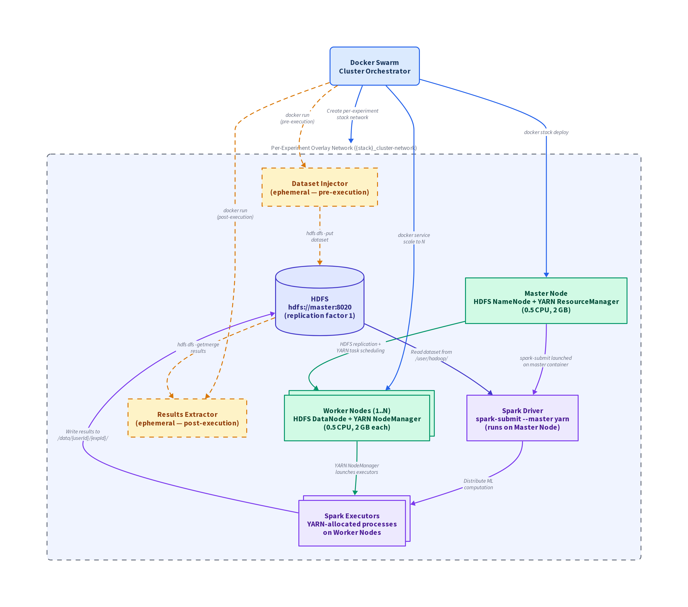

Diagram

docs/exlayer/execution-layer.png.
Three tiers, top to bottom
The execution layer is conceptually arranged in three tiers. The orchestrator sits on top, the cluster sits in the middle, and the actual computation/storage sits at the bottom.
Tier 1 — Containerization & Orchestration
| Node | Role |
|---|---|
| Docker Swarm | Cluster Orchestrator |
Tier 2 — Distributed cluster (inside Docker Swarm)
| Node | Role |
|---|---|
| Overlay Network | Per-experiment attachable overlay ({stack}_cluster-network) |
| Master Node | HDFS NameNode + YARN ResourceManager |
| Worker Nodes (1..N) | HDFS DataNode + YARN NodeManager |
| Dataset Injector | Ephemeral container — injects dataset into HDFS |
| Results Extractor | Ephemeral container — extracts results from HDFS |
Tier 3 — Computation & storage
| Node | Role |
|---|---|
| Spark Driver | spark-submit --master yarn (runs on Master Node) |
| Spark Executors | YARN-allocated processes on Worker Nodes |
| HDFS | hdfs://master:8020 (replication factor 1) |
Node reference
Docker Swarm
Orchestrates the Hadoop/Spark cluster as a Docker stack. It
dynamically rewrites the Dockerfile to include
user-specific algorithm JARs, builds the
spark-hadoop:latest image, deploys master/worker
services, runs ephemeral data-movement containers, and tears down
the stack on completion. Stack naming convention:
{workdir}_{experimentId[:12]}.
Overlay Network
An attachable overlay network created per experiment stack. It
provides Docker DNS-based service discovery — the master node
is reachable as the literal hostname master. All
cluster containers communicate over this network.
Master Node
A single container (0.5 CPU, 2048 MB) running the HDFS NameNode and
YARN ResourceManager. On first start it formats HDFS via
hdfs namenode -format. NameNode data is persisted to
a namenode-vol Docker volume. Hostname:
master via Docker DNS.
Worker Nodes
Scaled containers (1..N per experiment, 0.5 CPU, 2048 MB each)
running HDFS DataNode and YARN NodeManager. The count is set by
ClusterParameters.NodeCount from the application layer.
Each worker gets a unique Docker volume:
datanode-vol-SERV{service}-NODE{node}-TASK{slot}.
Dataset Injector
An ephemeral one-shot container
({stack}_dataset-injector) that volume-mounts the
local dataset file and copies it into HDFS via
hdfs dfs -put. It connects to the cluster overlay
network to reach the NameNode. Runs before
spark-submit.
Results Extractor
An ephemeral one-shot container
({stack}_results-extractor) that merges distributed
output files from HDFS back to the host filesystem via
hdfs dfs -getmerge. It connects to the cluster overlay
network. Runs after spark-submit completes.
Spark Driver
Launched via spark-submit --master yarn on the master
container. Configured with driver memory/cores, executor count,
executor cores/memory, and memory overhead from
ClusterParameters. Receives the dataset name, HDFS URL,
output path, and algorithm-specific parameters as positional
arguments.
Spark Executors
YARN-allocated processes on worker nodes that execute the
distributed ML algorithm. The Scala JARs are built for Spark 3.5.3
/ Scala 2.12 (CoDRIFt, MLRF, SupervisedMLRF, etc.) and live at
/opt/jars/ inside the container image.
HDFS
Hadoop Distributed File System with replication factor 1. Composed
of the NameNode (master) and DataNodes (workers). Datasets are
injected to /user/hadoop/ and results are written to
/data/{userId}/{experimentId}/. Both paths are cleaned
up post-experiment via hdfs dfs -rm.
Execution flow
Once submit-experiment.sh is invoked by the application
layer, the execution layer goes through this sequence:
-
Build the image.
docker buildagainst the freshly rewrittenspark-hadoop/Dockerfile. The user's algorithm JARs are baked in at/opt/jars/. -
Create the per-experiment overlay network.
Docker Swarm creates
{stack}_cluster-networkas an attachable overlay so the master, workers, and ephemeral containers can all see each other. -
Deploy the stack.
docker stack deploylaunches the master container (NameNode + ResourceManager) and scales the worker service toNodeCountcontainers (DataNode + NodeManager each). -
Format HDFS on first start.
The master runs
hdfs namenode -formatand persists NameNode state tonamenode-vol. -
Inject the dataset.
The Dataset Injector container mounts the local CSV at
/mnt/data/{dataset}and runshdfs dfs -put /mnt/data/{dataset} /user/hadoop/, then exits. -
Run
spark-submit. On the master container, Spark is launched in YARN mode. The driver runs on the master; YARN allocates executors on the worker nodes; Spark distributes the computation. Output is written to/data/{userId}/{experimentId}/in HDFS. -
Extract results.
The Results Extractor container runs
hdfs dfs -getmerge {output} /mnt/results/{merged}to merge distributed output files back to a single file on the host filesystem, then exits. -
Tear down.
cleanup.shremoves the stack, the overlay network, and HDFS artifacts. This runs unconditionally with a 30-second timeout.
Connections
| From | To | Label |
|---|---|---|
| Docker Swarm | Overlay Network | Create per-experiment stack network |
| Docker Swarm | Master Node | docker stack deploy |
| Docker Swarm | Worker Nodes | docker service scale to N |
| Docker Swarm | Dataset Injector | docker run (one-time, pre-execution) |
| Docker Swarm | Results Extractor | docker run (one-time, post-execution) |
| Master Node | Worker Nodes | HDFS replication + YARN task scheduling |
| Master Node | Spark Driver | spark-submit launched on master container |
| Dataset Injector | HDFS | hdfs dfs -put /mnt/data/{dataset} /user/hadoop |
| HDFS | Spark Driver | Read dataset from /user/hadoop/ |
| Spark Driver | Spark Executors | Distribute ML computation |
| Worker Nodes | Spark Executors | YARN NodeManager launches executors |
| Spark Executors | HDFS | Write results to /data/{userId}/{experimentId}/ |
| HDFS | Results Extractor | hdfs dfs -getmerge {output} /mnt/results/{merged} |
HDFS & container paths
| Path | Purpose |
|---|---|
hdfs://master:8020 | HDFS base URL (master node hostname via Docker DNS) |
/user/hadoop/{dataset} | Where the Dataset Injector places the input CSV |
/data/{userId}/{experimentId}/ | Where Spark writes distributed output in HDFS |
/opt/jars/ | Algorithm JARs inside the container image |
/mnt/data/{dataset} | Bind mount on the Dataset Injector container |
/mnt/results/ | Bind mount on the Results Extractor container (writes merged output back to host) |
namenode-vol | Docker volume holding NameNode metadata |
datanode-vol-SERV{s}-NODE{n}-TASK{t} | Per-worker Docker volume for DataNode storage |
Why it looks this way
A few choices in this layer aren't obvious until you've stared at it for a while. Here's what to keep in mind:
- The cluster is rebuilt for every experiment. That sounds wasteful, but it gives strong isolation: a broken algorithm cannot poison the next run because the entire stack (network, volumes, containers) is fresh. The price is the ~3 minute startup cost per experiment.
-
Algorithm JARs are baked into the image.
Rather than mounting JARs at runtime, the application layer
rewrites the
DockerfiletoCOPYthe user's JARs in beforedocker build. This is what forces sequential execution — only one experiment can own the sharedDockerfileat a time. - HDFS uses replication factor 1. For a single-machine swarm with worker containers running on the same host, replication adds nothing but disk usage. If PICARD ever moves to a true multi-node cluster, this should be revisited.
-
Data movement is done by separate one-shot containers.
The Dataset Injector and Results Extractor are deliberately
separate from the long-lived master/worker containers. They mount
host paths (
/mnt/data,/mnt/results), which the cluster containers do not. This is the only bridge between host disk and HDFS. -
Cleanup must run no matter what.
Spark crashes, and when it does it can leave orphaned namenodes
and dangling volumes.
cleanup.shis designed to run unconditionally with a 30-second timeout, anddocker system pruneis the manual escape hatch when things really get wedged.